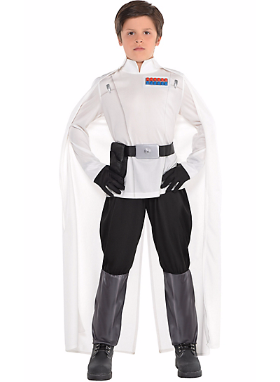

Director Krennic Costume
$34.99
Let your boy command his own squad of Death Troopers for the Galactic Empire in this Boys Director Krennic Costume. Have him put on the black and white jumpsuit that features silver uniform detailing and a rank patch to look just like Director Krennic from the Rogue One: A Star Wars Story movie. The jumpsuit fastens in the back with a hook-and-loop closure. Finish off his Director Krennic costume with the included holster belt and long white cape. Now he's ready to take down the rebel scum in this boys Rogue One costume! Shoes not included.
Star Wars Rogue One Boys Director Krennic Costume includes:
- Jumpsuit
- Cape
- Belt